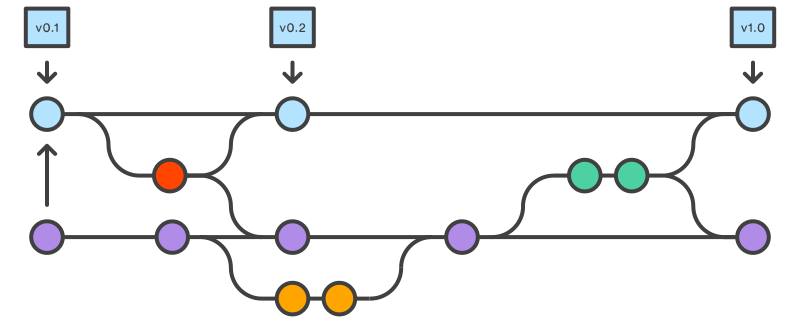
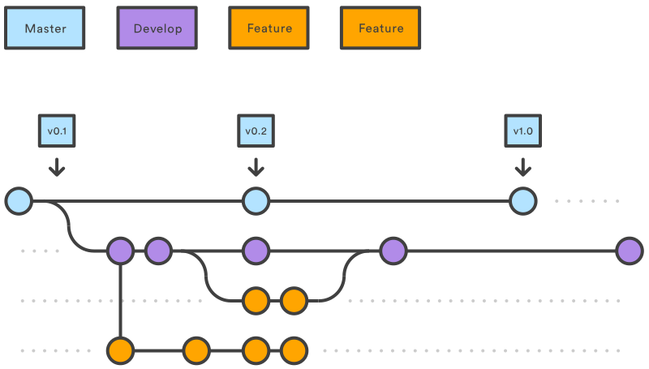
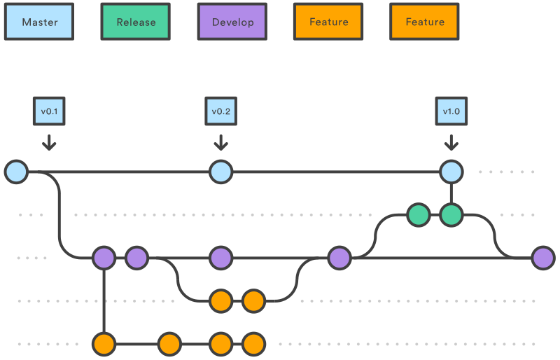
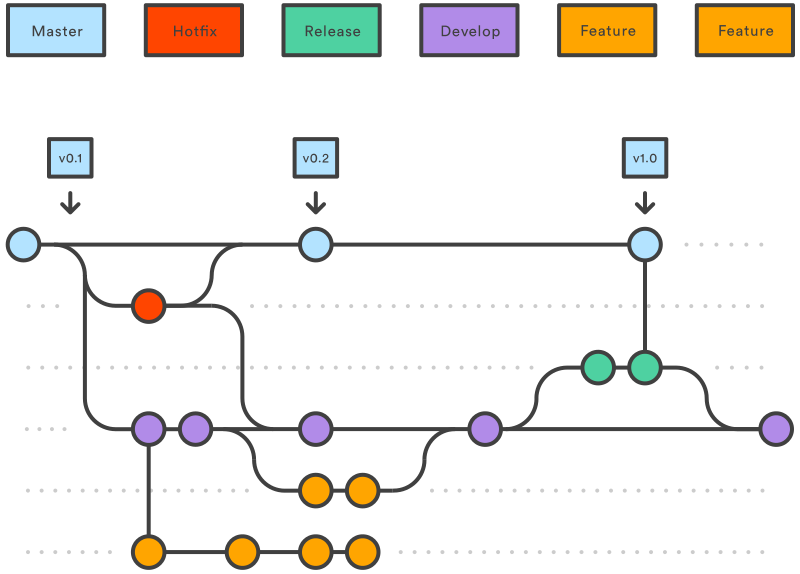
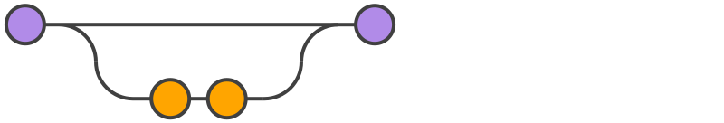
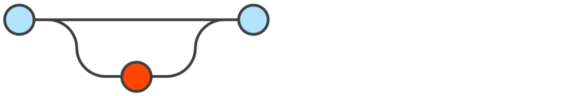

本文出处：原文
引言
编写的目的
- 通过规范化的流程，使得产品、开发与测试等各个部门更高效的协同工作。
- 通过规范化的流程使得产品高效稳定运行。
背景
在多组员，多项目等环境进行协同工作时，如果没有统一规范、统一流程，则会导致额外的工作量，甚至会做无用功。所以要减少版本冲突，减轻不必要的工作，就需要规范化的工作流程。
总则
- 统一使用Git作为版本控制的主要工具。
- 统一使用GitFlow流程管理控制版本。
提交的准则
- 除了源码相关的东西之外，其他build产生的东西（如：maven的target文件夹，.idea文件夹等），均不能提交进入源码仓库，添加到.gitignore文件中忽略掉。
- 撰写规范的提交说明。一份好的提交说明可以帮助协作者更轻松更有效地配合工作。
- 要严格按照我们指定的流程切换到指定分支，开发相应的功能。
分支简述
我们使用的分支流程：

- 天蓝色圆点所在的线为我们源码的主线（master）。
- 天蓝色方形指向的节点就是每一个发布版本的标签（tag）。
- 紫色圆点所在的线为主要分支线（develop）。
- 橙色圆点所在的线为新功能开发分支线（feature）。
- 绿色圆点所在的线为新版本发布线（release）。
- 红色圆点所在的线为发布版本bug修复线（hotfix）。
主分支说明
代替原来的单个主线（master），我们使用两个分支来记录源码轨迹：
- 原来的master分支用来记录官方发布轨迹；
- 新的develop分支是一个集成分支，用来记录开发新功能的轨迹。
 除了master主线和develop主分支线，其他的分支都是临时的分支，有一定的生命周期的，其余的工作流程分支都是围绕这两个分支之间的区别进行的。
除了master主线和develop主分支线，其他的分支都是临时的分支，有一定的生命周期的，其余的工作流程分支都是围绕这两个分支之间的区别进行的。
其他分支说明
- 新功能分支（Feature Branches） 每一个新的功能都应该创建一个独立的分支，从develop分支中派生出来。当功能完成后，要合并（merged）回develop分支，合并后它的生命周期就结束。新功能分支不会与master分支有直接的交汇。如图：  注意：对于所有意图和目的，新功能分支会合并到develop分支。但是，这个Gitflow工作流不会在此结束。
- 发布分支（Release Branches） 一旦开发的功能已经满足发布条件（或预定发布日期接近），应该合并所有满足发布条件的新功能分支到develop分支中，然后，开出一个发布分支（Release），开始准备一个发布版本。在这个分支上，不能再添加新的功能，只有bug修复和该版本为导向的任务。一旦到了发布日期，Release就要合并回master发布，并且，打出版本标签。另外，还需要合并回develop分支。  使用一个专门的分支来准备发布版本，使得一个团队能对当前版本进行抛光，而另一个团队继续为下一个版本的功能做准备。它还创造了良好定义的发展阶段（例如，很容易说，“本周我们正在准备4.0版”，而且真实地看到它在库中的结构）。
- 维护分支（Maintenance Branches） 维护分支也就是线上bug修复分支，使用来快速修复生产环境的紧急问题。  这个分支是唯一一个开放过程中直接从master分支派生来的分支。快速的修复问题后，它应该被合并回master和develop（或者当前发布分支），然后，master分支需要打一个版本标签。 一个专门的错误修复开发线，可以让团队在不等待下一个发布周期，导致中断工作流程情况下解决问题。可以将维护分支当做主要的问题修复分支，与master并行。
命名约定
-
主分支名称：master
-
主开发分支名称：develop
-
标签（tag）名称：v*.RELEASE，其中”*“ 为版本号，“RELEASE”大写，如：v1.0.0.RELEASE
-
新功能开发分支名称：feature-* or feature/，其中“” 为新功能简述，如：feature-item-activity-list
-
发布分支名称：release-* or release/，其中 为版本号，“release”小写，如：release-1.0.0
-
master的bug修复分支名称：hotfix-* or hotfix/* ，其中* 为bug简述，如：hotfix/item-update-bug
工作流程
下面具体演示如何使用工作流来管理版本发布周期。假设我们已经存在或创建了一个源码中央存储仓库。
工作流的基础
创建develop分支

-
项目负责人在本地master基础上创建一个develop分支，然后，推送到服务器；
git branch developgit push -u origin develop
其他开发人员，需要克隆develop中央仓库的源码，创建一个develop的轨迹版本；如果，已经克隆过该项目，则，不需要执行以下第一条命令。
git clone git@bitbucket.org:ytx-dev/ytx-demo.gitgit checkout -b develop origin/develop
develop这个分支将包含项目的完整历史记录，而master将包含缩略版本。
** 假设开始以下所有的流程之前，都已经创建好develop分支。**
新功能开发流程
- 新建feature分支 基于develop分支创建新功能分支：
git checkout -b feature/demo develop
推送到远程仓库，共享：
git push
所有开发此新功能的人员，都在此分支上开发提交代码。
git statusgit add <some-file>git commit -m "Add some-file."
完成新功能开发（合并feature分支到develop）  当确定新功能开发完成，且联调测试通过，并且新功能负责人已经得到合并feature分支到develop分支的允许；这样才能合并feature分支到develop。
-
git pull origin develop git checkout develop git merge feature/demo git push git branch -d feature/demo第一条命令是确保在合并新功能之前，develop分支是最新的。 注意：
- 新功能分支，永远不要直接合并到master分支。
- 合并可能会有冲突，应该谨慎处理冲突。
- 在测试环境发布develop分支代码（提交测试）
线上版本发布流程
- 从develop中创建准备发布的release分支 当主测试流程完成，源码已经趋近于稳定状态，应该准备一个发布版本，确立版本号：
git checkout -b release-0.1.0 develop
推送到远程仓库共享：
git push
这个分支是清理准备发布、 整体回归测试、 更新文档，和做其他任何系统即将发布的事情。
继续抛光改bug
release分支合并到master发布 一旦已经满足发布条件（或已经到了预定发布日期），应该把release分支合并到master分支和develop分支中，然后，使用master发布新版本。合并release分支到develop分支是很重要的，要让release上修改的东西能在后续的开发分支中生效。
git checkout mastergit merge release-0.1.0git push
release分支合并到develop
git checkout developgit merge release-0.1.0git pushgit branch -d release-0.1.0
打标签 Release分支在功能开发分支（develop）和公共发布版（master）中，充当一个缓冲的作用。每当有源码合并到master中的时候，应该在master上打一个标签，以便后续跟踪查阅。
git tag -a 0.1.0.RELEASE -m "Initial public release" mastergit push --tags
线上Bug修复流程
当终端用户，反馈系统有bug时，为了处理bug，需要从master中创建出保养分支；等到bug修复完成，需要合并回master：
-
创建hotfix分支
git checkout -b issue-#001 master
修改bug Fix the bug
完成修复，合并到master发布 
git checkout mastergit merge issue-#001git push
打标签
git tag -a 0.1.1.RELEASE -m "Initial public release" mastergit push --tags
合并到develop
git checkout developgit merge issue-#001git push